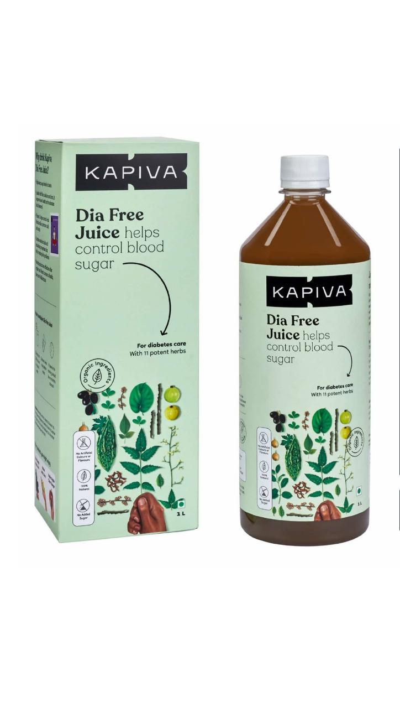

 |
Description:Kapiva Diafree juice is an Ayurvedic juice and it contains Jamun, Amla, Karela, Guduchi, Tulsi, Neem, Belpatra, Methi, Kutki, Paneer Doda, and Gudmaar as the active ingredient. The juice is natural and it helps to control blood sugar levels in the body Help to fight against diabetes Key benefits: Controls blood sugar levels in the body Helps break down the build-up of excessive blood sugar Heals the pancreas by reactivating them and their insulin-producing capacity Removes any difficulty experienced during urination Improves functions of the digestive system Direction for use: Take 30 ml of juice with equal parts water, twice a day to help fight Diabetes Storage instructions: store in a cool, dry & dark place Protect from direct sunlight Safety information: Read the label carefully before use Do not exceed the recommended dose Keep out of the reach and sight of children |